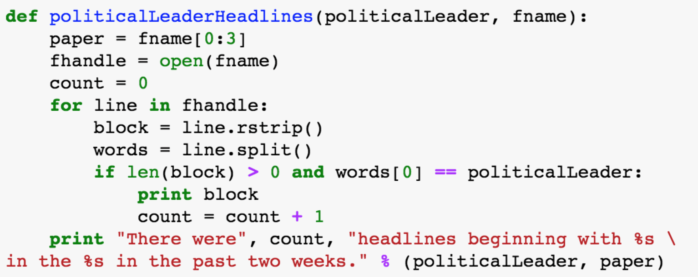
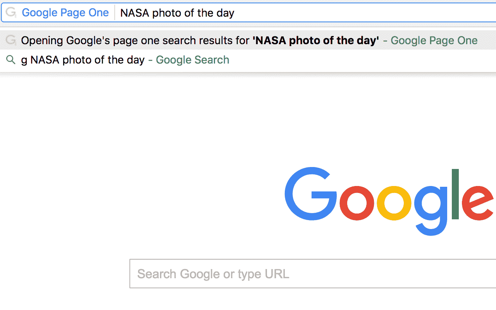
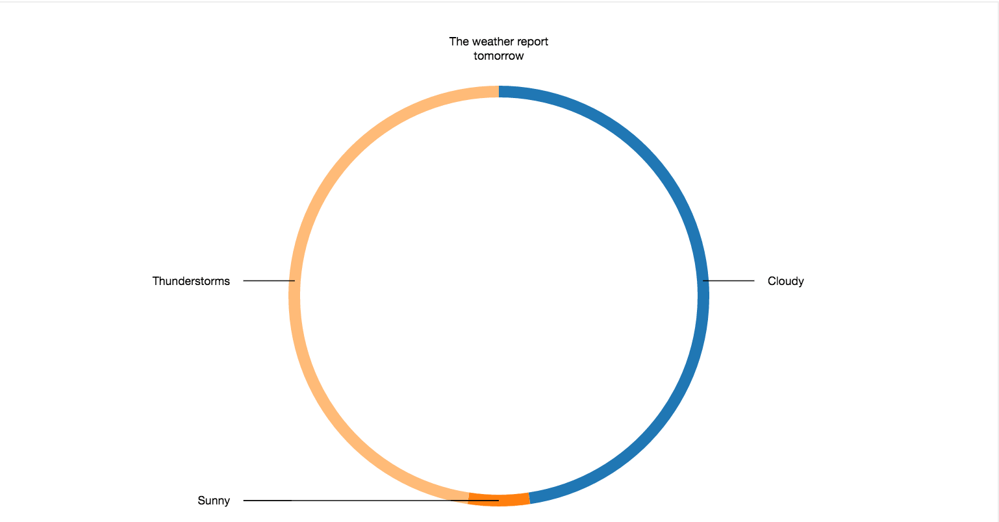

My name is Sam Putnam, and this is my newest work. I work with an agreement that I can publish parts of my code that I develop for employers if they do not contain proprietary technology, copyrighted material, or reference to the employer I developed them for. That code is in here. All of this code is MIT licensed. You can take it and use it for any purpose.
Thank you.

Sentiment Analysis of WSJ and NYT Front Page Presidential Headlines for a Naive Bayes Classifier in Python
Sentiment Analysis of WSJ and NYT Front Page Presidential Headlines for a Naive Bayes Classifier in Python
A pair of functions that return the number of headlines starting with the surname of a political leader and an ordered list of verb frequencies that are chosen by the newspaper to denote what the political leader did.
Indexing Input Data for a Convolutional Neural Network in R
A few functions that apply a mathematical operation to a data point across a subset of identically dimensioned data sets and return the number of completely observed rows and the correlation between features - for dimensionality reduction - in such a subset .
25x Speed Increase from Training a DNN on an AWS GPU (vs. AWS CPU)
Results showing a 25x speedup using a GPU over a CPU to train a deep neural network on an AWS instance.
Adding an “Upgrade” Menu Item to a MacOS App
Creating a menu item and an IBAction with a url to show the user the app's Pro version on the Mac App Store.
One Capacity Scheduling Algorithm for Discrete Tasks on Large Hadoop Clusters that is Fair and Low-Cost
A randomized scheduling algorithm that emulates the pool structure of the Fair Scheduler and the throughput maximization of the Capacity Scheduler.
Understanding Mistaken Image Classification on NMIST’s Handwritten Digits with TensorFlow’s TF.Learn
Processing output predictions and understanding mistakes that a TF.Learn neural network makes in a canonical multi-class classification problem.
Transparent ML with scikit-learn’s Decision Tree Classifier
Generating a decision tree from a decision tree classifier with the scikit-learn package.
Feature Selection and Exploratory Analysis with the SciPy Stack
Using NumPy, matplotlib, and the SciPy library to visualize a K-Nearest Neighbor classifier on the three-class Iris Flower Data set.
Google first page search extension
Google Page One is a search assist that automates opening the top 10 - 15 links on the first page of search results when a user searches Google from the browser bar. Google Page One is triggered by clicking into the browser bar, pressing 'g', and then pressing enter or space. Typing a query and pressing enter searches Google and opens results from page one. A listener callback hears when the search result page is created and scrapes the html for header links, opening each in succession.

Dynamic d3 donut chart
Donut chart drawing a set of data from an array and dynamically updating entries and their values on a timer with the help of jQuery's setTimout. Messages pushed to HTML are synchronized with the d3.js data.

Android open camera or gallery and update profile
Android activity that accesses the camera and the gallery and has an overflow menu and input fields in the form of images, textviews, and radio buttons.
Blank Firebase login with hidden logout
Firebase login that just worksTM
News feed iOS app
Uplifting social app with Wings theme that has a news feed, followers, and Facebook and Parse logins. Users can uplift other users' posts and post their own content. A new feature in Wings is the ability to save captions for later, using Realm.
Facebook or AWS login
Swift app accessed by logging in with a user email and password stored via AWS Cognito or with Facebook. In this blank app, a song can be played and a profile image can be taken from the camera.
Geotagged post to Facebook or Twitter
Set of Swift methods that use the Social and Accounts frameworks to share to Facebook and Twitter. Facebook posts can be shared with a particular audience, and both Facebook and Twitter posts can be tagged with a location.
MapKit current location
Blank Swift view controller that shows the characteristic blue dot of the user's location. It prints latitude and longitude coordinates and a timestamp from the last location update to the Xcode console.